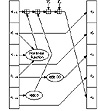

| Previous | Table of Contents | Next |
NIST, along with the NSA, designed the Secure Hash Algorithm (SHA) for use with the Digital Signature Standard (see Section 20.2) [1154]. (The standard is the Secure Hash Standard (SHS); SHA is the algorithm used in the standard.) According to the Federal Register [539]:
A Federal Information Processing Standard (FIPS) for Secure Hash Standard (SHS) is being proposed. This proposed standard specified a Secure Hash Algorithm (SHA) for use with the proposed Digital Signature Standard .... Additionally, for applications not requiring a digital signature, the SHA is to be used whenever a secure hash algorithm is required for Federal applications.
And
This Standard specifies a Secure Hash Algorithm (SHA), which is necessary to ensure the security of the Digital Signature Algorithm (DSA). When a message of any length < 264 bits is input, the SHA produces a 160-bit output called a message digest. The message digest is then input to the DSA, which computes the signature for the message. Signing the message digest rather than the message often improves the efficiency of the process, because the message digest is usually much smaller than the message. The same message digest should be obtained by the verifier of the signature when the received version of the message is used as input to SHA. The SHA is called secure because it is designed to be computationally infeasible to recover a message corresponding to a given message digest, or to find two different messages which produce the same message digest. Any change to a message in transit will, with a very high probability, result in a different message digest, and the signature will fail to verify. The SHA is based on principles similar to those used by Professor Ronald L. Rivest of MIT when designing the MD4 message digest algorithm [1319], and is closely modelled after that algorithm.
SHA produces a 160-bit hash, longer than MD5.
Description of SHA
First, the message is padded to make it a multiple of 512 bits long. Padding is exactly the same as in MD5: First append a one, then as many zeros as necessary to make it 64 bits short of a multiple of 512, and finally a 64-bit representation of the length of the message before padding.
Five 32-bit variables (MD5 has four variables, but this algorithm needs to produce a 160-bit hash) are initialized as follows:
The main loop of the algorithm then begins. It processes the message 512 bits at a time and continues for as many 512-bit blocks as are in the message.
First the five variables are copied into different variables: a gets A, b gets B, c gets C, d gets D, and e gets E.
The main loop has four rounds of 20 operations each (MD5 has four rounds of 16 operations each). Each operation performs a nonlinear function on three of a, b, c, d, and e, and then does shifting and adding similar to MD5.
SHA’s set of nonlinear functions is:
Four constants are used in the algorithm:
(If you wonder where those numbers came from: 0x5a827999 = 21/2 /4, 0x6ed9eba1 = 31/2 /4, 0x8f1bbcdc = 51/2 /4, and 0xca62c1d6 = 101/2 /4; all times 232.)
The message block is transformed from 16 32-bit words (M0 to M15 ) to 80 32-bit words (W0 to W79) using the following algorithm:
(As an interesting aside, the original SHA specification did not have the left circular shift. The change “corrects a technical flaw that made the standard less secure than had been thought” [543]. The NSA has refused to elaborate on the exact nature of the flaw.)
If t is the operation number (from 0 to 79), Wt represents the t th sub-block of the expanded message, and <<< s represents a left circular shift of s bits, then the main loop looks like:

Figure 18.7 One SHA operation.
Figure 18.7 shows one operation. Shifting the variables accomplishes the same thing as MD5 does by using different variables in different locations.
After all of this, a, b, c, d, and e are added to A, B, C, D, and E respectively, and the algorithm continues with the next block of data. The final output is the concatenation of A, B, C, D, and E.
Security of SHA
SHA is very similar to MD4, but has a 160-bit hash value. The main changes are the addition of an expand transformation and the addition of the previous step’s output into the next step for a faster avalanche effect. Ron Rivest made public the design decisions behind MD5, but SHA’s designers did not. Here are Rivest’s MD5 improvements to MD4 and how they compare with SHA’s:
This leads to the following comparison: SHA is MD4 with the addition of an expand transformation, an extra round, and better avalanche effect; MD5 is MD4 with improved bit hashing, an extra round, and better avalanche effect.
There are no known cryptographic attacks against SHA. Because it produces a 160-bit hash, it is more resistant to brute-force attacks (including birthday attacks) than 128-bit hash functions covered in this chapter.
| Previous | Table of Contents | Next |
){kind=link}
){kind=link}